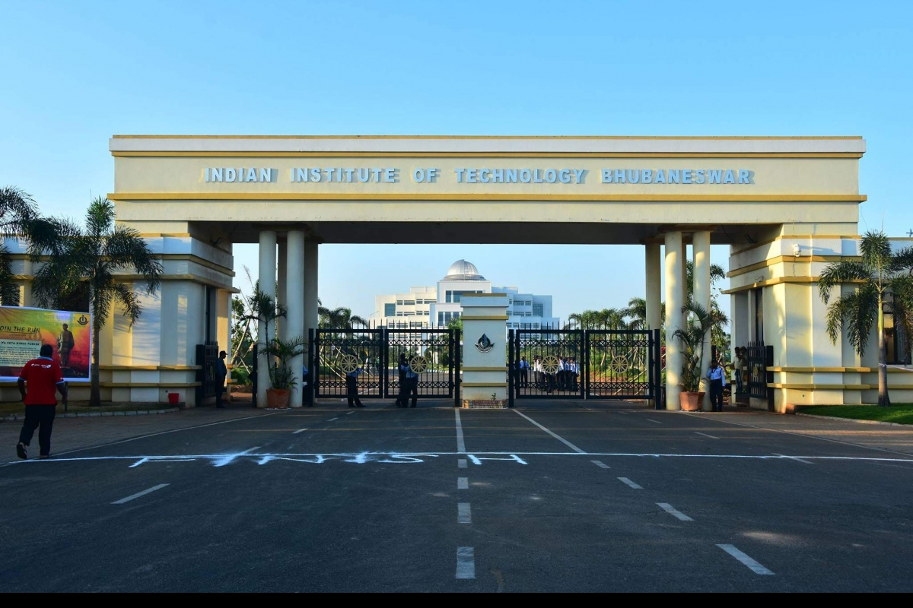
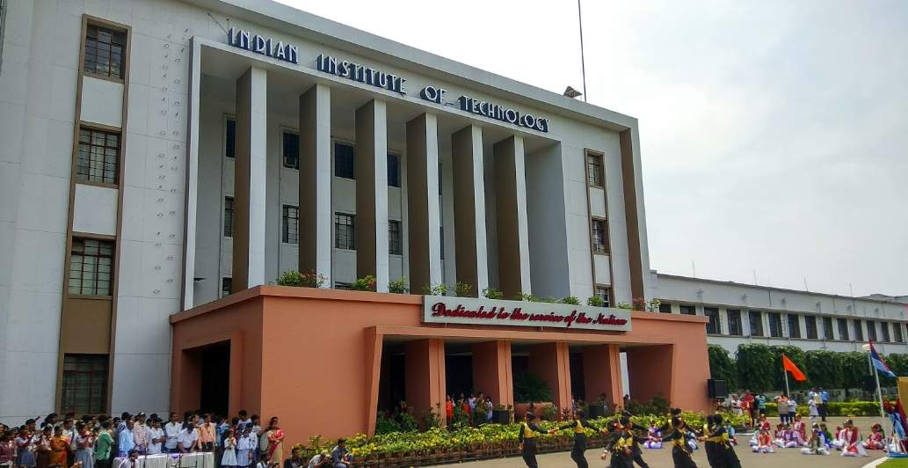
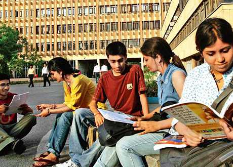
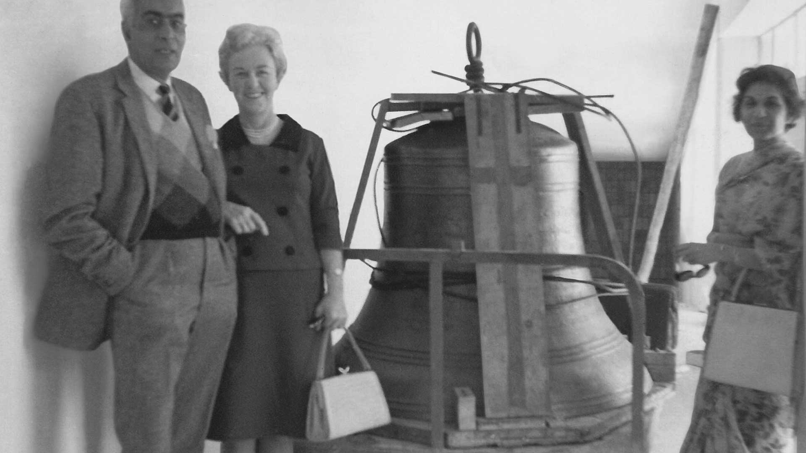
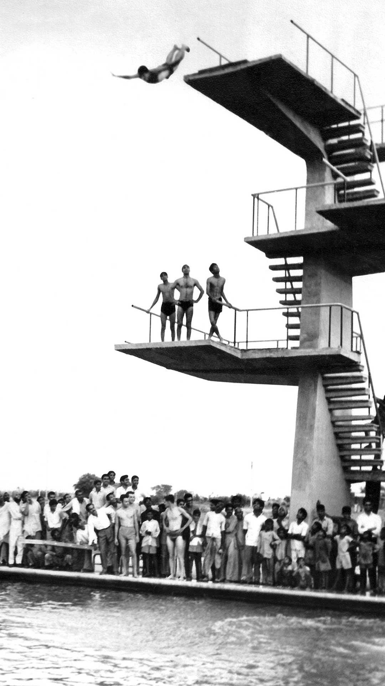
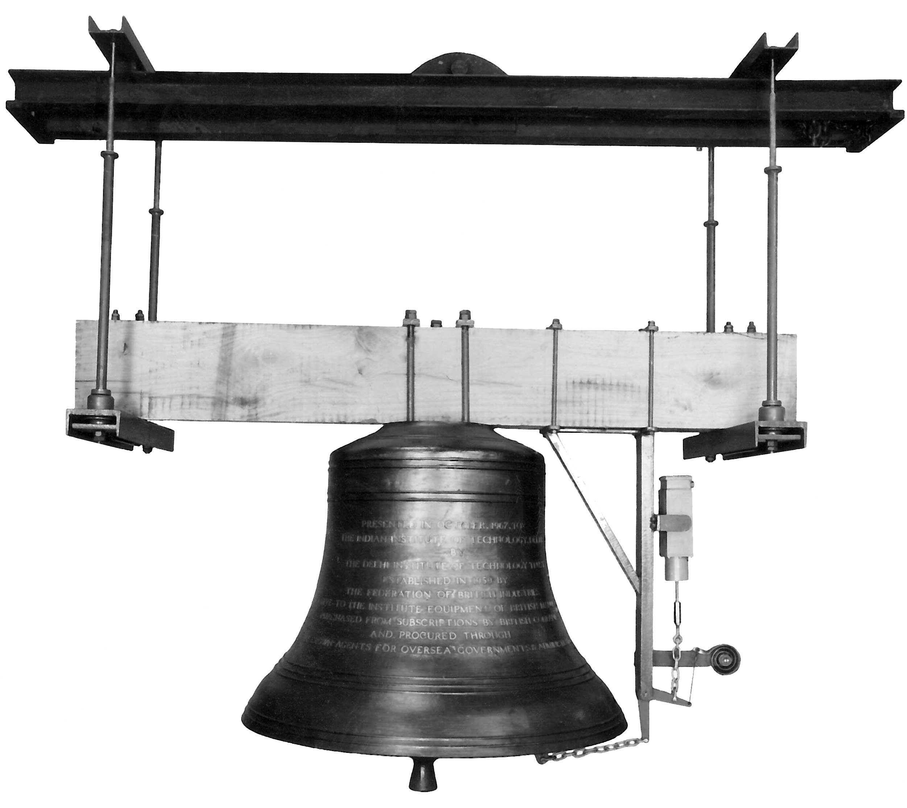
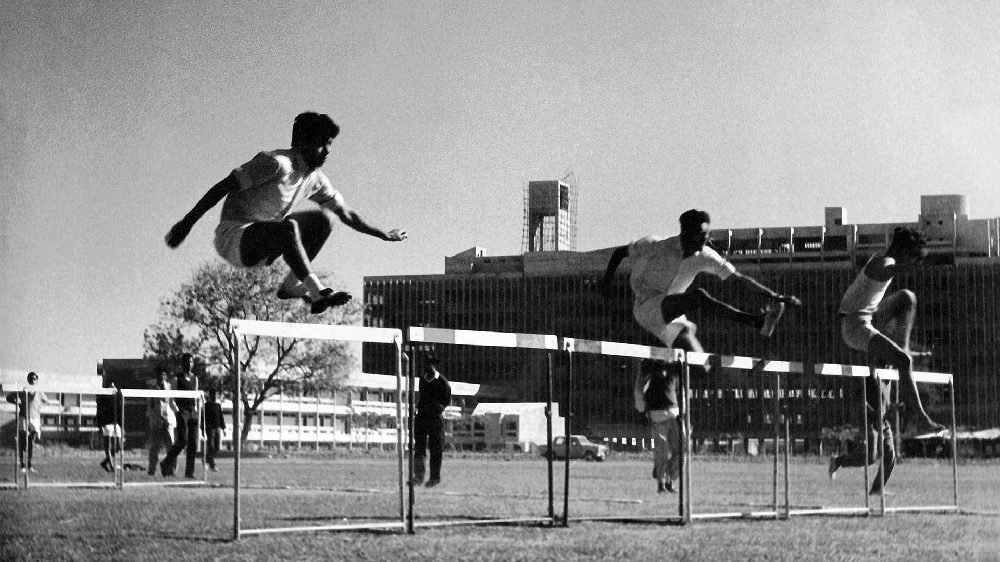

HISTORY

The concept of the IITs was first introduced in a report in the year 1945 by Sh. N.M.Sircar, then member of Education on Vicerory’s Executive Council. Following his recommendations, the first Indian Institute of Technology was established in the year 1950 in Kharagpur. In his report, Shri Sircar had suggested that such Institutes should also be started in different parts of the country. The Government having accepted these recommendations of the Sircar Committee decided to establish more Institutes of Technology with the assistance of friendly countries who were prepared to help. The first offer of help came from USSR who agreed to collaborate in the establishment of an Institute through UNESCO at Bombay. This was followed by the Institutes of Technology at Madras, Kanpur and Delhi with collaborations with West Germany, USA and UK respectively. Indian Institute of Technology, Guwahati was established in 1995 and the University of Roorkee was converted into an IIT in 2001.
ESTABLISHMENT
The Government of India negotiated with the British Government for collaboration in setting up an Institute of Technology at Delhi. The British Government agreed in principle to such a collaboration, but were inclined initially to start in a modest way. It was therefore agreed that a College of Engineering & Technology should be established at Delhi with their assistance. A trust called the Delhi Engineering College Trust was established with the help of the UK Government and the Federation of British Industries in London. Later H.R.H. Prince Philips, Duke of Edinburgh, during his visit to India, laid the foundation stone of the College at Hauz Khas on January 28,1959.

The College of Engineering & Technology was registered as a Society on 14th June 1960 under the Societies Registration Act No. XXI of 1860 (Registration No.S1663 of 1960-61). The first admissions were made in 1961. The students were asked to report at the College on 16th August 1961 and the College was formally inaugurated on 17th of August 1961 by Prof. Humayun Kabir, Minister of Scientific Research & Cultural Affairs. The College was affiliated to the University of Delhi.
According to Section 4 of the Act, each of the Institutes shall be a body corporate having perpetual succession and a common seal and shall, by its name, sue and be sued. The body corporate constituting each of the Institutes, shall consist of a Chairman, a Director and other members of the Board for the time being of the Institute. IIT Delhi is an autonomous statutory organisation functioning in terms of the Institutes of Technology Act, 1961 amended vide the Institutes of Technology (Amendment) Act, 1963 and the Statutes framed thereunder. Responsibility for the general superintendence, direction and control of the affairs of the Institute is vested in the Board of Governors. The Board of Governors functions through its Standing Committees - Finance Committee, Building & Works Committee and such other adhoc committees which are constituted by it from time to time to consider specific issues. The control and general regulation for the maintenance of standards of instruction, education and examination in the Institute vests in the Senate. The Senate is responsible for formulation of the academic policies and to design curricula, the courses of studies and the system of examination. The Senate functions through its Standing Boards/Committees and Sub-committees that may be constituted by it to look into the specific matters arising from time to time.





